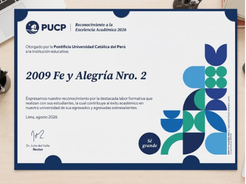

Fe y Alegría 02 recibe reconocimiento a la Excelencia Académica 2026 por la PUCP
La I.E. Fe y Alegría 02 recibió el reconocimiento a la Excelencia Académica 2026 otorgado por la Pontificia Universidad Católica del Perú, destacando el compromiso de la institución con la formación académica de sus estudiantes.
